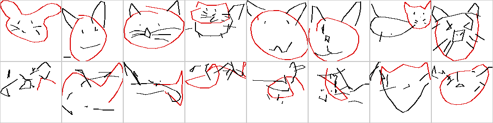
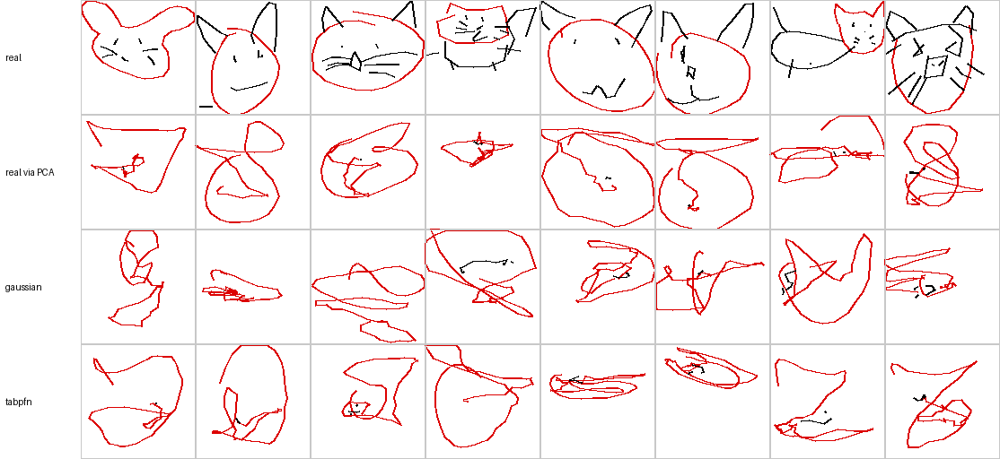
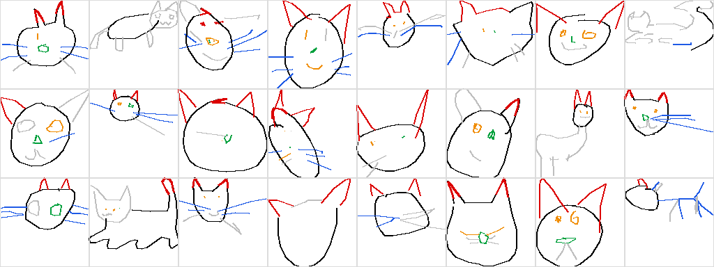

Can TabPFN draw a cat?
TabPFN is a foundation model for tables. It is not meant to draw. This project teaches it to doodle cats from a few hundred examples, then asks a classifier whether it can spot the fakes.
Four of these cats were drawn by people
The other four were made up by TabPFN. All eight are redrawn by the same code, so the pen line is no clue.
The short version
- Pixels and raw pen points don't work: TabPFN needs every column to mean the same thing in every row.
- Describing a cat as parts and how they relate (ears, whiskers, nose, eyes, measured relative to the head) does work. That turns each doodle into one row of 21 numbers.
- On those numbers, a classifier can barely tell TabPFN's cats from real ones: ROC-AUC 0.56, where 0.50 means it can't tell at all. Mixing parts from different real cats scores 0.78, so TabPFN learned how the parts fit together.
2,000 cats from Quick, Draw!
Google's Quick, Draw! game asked people to draw a cat in 20 seconds. Each drawing is saved as pen strokes, not pixels. We kept the first 2,000 drawings the game's own AI recognized as cats (84% of the 2,373 read). A typical cat has 9 strokes and 56 points.
Pixels were never an option. A tiny 64 × 64 colour image is 12,288 columns, and TabPFN has no idea that pixel 1 sits next to pixel 2.
Draw it point by point
Each cat became 64 points of (x, y, pen-lifted), so 192 columns. Strokes were sorted longest first, so the head outline usually comes first. TabPFN then generated the columns one at a time, each one sampled from its prediction given the columns before it.

Why it failed: 192 separate noisy decisions, each seeing only the last few points. Small errors add up and the line drifts. Worse, column 30 is an ear in one cat and a whisker in another, so there is no single thing for TabPFN to learn about it.
Squeeze it with PCA first
PCA describes each cat with 20 whole-shape patterns instead of 192 columns. TabPFN and a simple Gaussian then generated those 20 numbers.

Why it failed: PCA builds every cat as an average plus a blend of patterns. That only works when the same column is the same body part in every cat. Here it wasn't, so the average of an ear and a whisker is mush. The problem was the representation, not the generator.
Describe the parts, not the pixels
What makes a doodle a cat isn't where the nose is. It's the basic shapes and how they relate: pointy ears and whiskers are the must-haves, a triangle nose is a strong hint, and eyes tell you little because every face has them.
So each cat became one row of measurements, all taken relative to the head: the head is about 2 units wide, its centre is (0, 0), and the measurements are ratios. A big cat and a small cat with the same proportions get the same row. A part-finder pulls the parts out of each doodle with simple rules.

| Part | Columns |
|---|---|
| Head | height ÷ width |
| Ears | tip position and corner angle, each ear |
| Whiskers | count per side, length, tilt |
| Nose | present?, position, size, shape (dot or outline), roundness |
| Eyes | present?, gap between them, height, size |
Both ears were found in 58% of cats, whiskers in 58%, a nose in 56%, two eyes in 45%. Keeping cats with both ears and a face-shaped head leaves 1,080 face cats. A missing part is information too, so TabPFN first decides "does this cat have a nose?" and only then how big it is.
Ask a classifier to catch it
A gradient-boosting classifier gets 200 real cats it has never seen and 200 generated ones, and tries to tell them apart (5-fold cross-validation). Its ROC-AUC is the score: 0.50 means it can't tell, 1.00 means it catches every fake.
TabPFN competes with two baselines that know each part's typical values but nothing about how parts relate:
- Shuffled: every column copied from a different random real cat. Each part is real, they just don't belong together.
- Gaussian: every column drawn from its own bell curve.
If TabPFN beats shuffled, the difference can only come from the relations between parts.
TabPFN's cats are close to real
ROC-AUC of the classifier test, 880 training cats, 5 random seeds. Dot = average, line = lowest to highest seed. Further left is harder to catch.
| Generator | Average ROC-AUC | Range over 5 seeds |
|---|---|---|
| Real vs real (sanity check) | 0.497 | 0.473 – 0.540 |
| TabPFN | 0.564 | 0.516 – 0.586 |
| Shuffled | 0.775 | 0.738 – 0.800 |
| Gaussian | 0.782 | 0.765 – 0.818 |
TabPFN beat shuffled in every seed by a wide margin. It is close to real, but not identical: it came out a little above "real vs real" in all five seeds, about 0.07 on average, so a careful classifier can still pick up a small difference.
Six held-out real cats, six TabPFN cats and six shuffled cats (the first six of each group in the data, not hand-picked), all drawn by the same code from their 21 numbers.
TabPFN's biggest weakness was our bug
Before the final run TabPFN scored 0.66, not 0.56. To find out why, we scrambled one column at a time and watched how much worse the classifier got (permutation importance). For TabPFN, one column did almost all the work: nose_round, the nose's roundness, with a drop of 0.143. The next column was 0.017.
Yet real and fake roundness had the same range: 5th, 50th and 95th percentiles of 0.21 / 0.51 / 0.81 against 0.22 / 0.51 / 0.82. The difference was in the fine detail. 47 of 131 real noses had exactly 0.514. That was the median we had filled in for noses too small to measure. TabPFN noticed the spike and copied it, but split it between 0.513 and 0.514, and a tree classifier catches a 0.001 miss.
The fix was to stop inventing a value: a new yes/no column says whether the nose is a measurable shape or just a dot. TabPFN then dropped from 0.647 to 0.570 on the same seed, and no single column gave it away any more: the biggest drop left was 0.05.
| Generator (seed 0, 880 cats) | Before fix | After fix |
|---|---|---|
| Real vs real | 0.539 | 0.540 |
| TabPFN | 0.647 | 0.570 |
| Shuffled | 0.762 | 0.738 |
| Gaussian | 0.780 | 0.765 |
The same test caught the opposite pattern for shuffled: many small giveaways (an ear's height 0.08, head shape 0.06, whisker count 0.04) where each column looks real on its own. That is what broken relations look like.
About 500, then it levels off
| Training cats | TabPFN | Shuffled | Gaussian | Real vs real |
|---|---|---|---|---|
| 250 | 0.695 | 0.778 | 0.802 | 0.568 |
| 500 | 0.641 | 0.750 | 0.775 | 0.533 |
| 880 | 0.647 | 0.762 | 0.780 | 0.539 |
| 880, 8 estimators | 0.615 | 0.762 | 0.780 | 0.539 |
Seed 0, same 200 test cats, before the nose fix. Going from 250 to 500 cats helps; going to 880 doesn't. More data wasn't the bottleneck, which is what sent us looking for the nose bug.
Limits
- "Close to real" is measured on the 21 numbers, not on pictures. The part-finder's rules are rough and only keep 54% of cats (the face cats with both ears found).
- The drawings are a simple redraw of those numbers, so even real cats lose detail. The comparison is fair because every group uses the same drawing code.
- There is no human study yet. The quiz is a playable demo: 8 real, 8 TabPFN and 8 shuffled cats, with shuffled as the control people should be able to catch.
- TabPFN generates column by column in a fixed order (head, ears, whiskers, nose, eyes). A different order might do better or worse; that wasn't tested.
Run it yourself
get_cats.pystreams 2,000 recognized cats.make_table.pyandgenerate_tabpfn.py: attempt 1, point by point.generate_pca.py: attempt 2, PCA.find_parts.pyfinds the parts;generate_parts.pygenerates and scores (attempt 3).which_columns.pyshows which columns give the fakes away.export_quiz.pyexports cats for the quiz.
Tested with tabpfn 10.2, Python 3.14 and an RTX 3080. Generating 200 cats with TabPFN takes about 20 seconds.